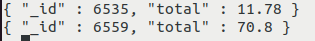
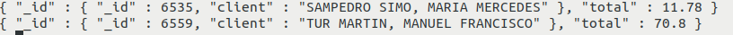

Implementación de Relaciones en MongoDB
MongoDB, al ser una base de datos NoSQL, no maneja relaciones de la misma manera que SQL. Sin embargo, permite representar relaciones entre documentos utilizando dos enfoques principales:
1️⃣ Relaciones mediante documentos embebidos.
2️⃣ Relaciones mediante referencias.
Cada enfoque tiene ventajas y desventajas, según el caso de uso.
4.1. Relación con Documentos Embebidos
Este enfoque anida los datos relacionados dentro del mismo documento.
Se usa cuando los datos relacionados se consultan frecuentemente juntos y no crecen demasiado en tamaño.
Ejemplo: Cliente con sus Pedidos embebidos
{
"_id": 1,
"nombre": "Juan",
"email": "juan@email.com",
"pedidos": [
{ "producto": "Laptop", "total": 1200 },
{ "producto": "Mouse", "total": 25 }
]
}
✅ Ventajas
✔ Rápida recuperación de datos (no requiere JOINs).
✔ Menos consultas a la base de datos.
✔ Buena opción si los datos no crecen demasiado.
❌ Desventajas
✖ Si los pedidos crecen mucho, el documento se hace muy grande.
✖ No se pueden actualizar pedidos de forma independiente sin modificar el cliente.
4.2. Relación con Referencias
En este enfoque, los documentos almacenan solo referencias (IDs) de documentos en otras colecciones.
Se usa cuando los datos son reutilizados en múltiples documentos o crecen mucho en tamaño.
Estas referencias pueden ser de dos tipos; referencias manuales o por DBRefs.
Ejemplo: Cliente y Pedidos en colecciones separadas con referencia
Colección clientes
{
"_id": 1,
"nombre": "Juan",
"email": "juan@email.com",
"pedidos": [101, 102] // Referencias a pedidos
}
Colección pedidos
[
{ "_id": 101, "cliente_id": 1, "producto": "Laptop", "total": 1200 },
{ "_id": 102, "cliente_id": 1, "producto": "Mouse", "total": 25 }
]
✅ Ventajas
✔ Evita documentos muy grandes.
✔ Permite reutilizar datos sin duplicarlos.
✔ Se pueden actualizar las referencias sin modificar el documento original.
❌ Desventajas
✖ Se necesitan consultas adicionales ($lookup) para traer los datos completos.
✖ Puede ser más lento en consultas frecuentes.
"Regla general
- Si los datos relacionados son de uso frecuente y pequeños → Usa documentos embebidos.
- Si los datos crecen mucho o se usan en varias colecciones → Usa referencias con
$lookup.
4.3. Relaciones en MongoDB con $lookup
En MongoDB, la agregación con $lookup permite realizar joins entre colecciones.
Es útil cuando seguimos un enfoque de modelado de datos con referencias, donde almacenamos solo el ObjectId en lugar de los documentos embebidos.
Sintaxis
{
$lookup: {
from: <collection_to_join>,
localField: <field_from_the_input_documents>,
foreignField: <field_from_collection>,
as: <output_array_field>
}
}
-
Colección
usuarios[ { "_id": 1, "nombre": "Carlos", "email": "carlos@example.com" }, { "_id": 2, "nombre": "Ana", "email": "ana@example.com" } ] -
Colección
pedidos[ { "_id": 101, "usuario_id": 1, "producto": "Laptop", "precio": 1200 }, { "_id": 102, "usuario_id": 1, "producto": "Mouse", "precio": 50 }, { "_id": 103, "usuario_id": 2, "producto": "Teclado", "precio": 80 } ] -
Consulta con
$lookuppara unir usuarios con sus pedidosdb.usuarios.aggregate([ { "$lookup": { "from": "pedidos", // Colección a unir "localField": "_id", // Campo en la colección actual (usuarios) "foreignField": "usuario_id", // Campo en la otra colección (pedidos) "as": "pedidos" // Nombre del campo de salida con los pedidos } } ]) -
Resultado esperado
[ { "_id": 1, "nombre": "Carlos", "email": "carlos@example.com", "pedidos": [ { "_id": 101, "usuario_id": 1, "producto": "Laptop", "precio": 1200 }, { "_id": 102, "usuario_id": 1, "producto": "Mouse", "precio": 50 } ] }, { "_id": 2, "nombre": "Ana", "email": "ana@example.com", "pedidos": [ { "_id": 103, "usuario_id": 2, "producto": "Teclado", "precio": 80 } ] } ]
Ejemplo 2: Realcionar la colección autores con sus libros.
db.createCollection("authors");
db.createCollection("books");
// Primera instrucción
db.authors.insertOne({
name: "Diego",
email: "dcortes@example.com",
age: 25
});
// Segunda instrucción (Se debe obtener el ID del autor y remplazar)
db.books.insertMany([
{
name: "Philosopher's Stone",
author_id: ObjectId("id_of_author")
},
{
name: "Secret of programming",
author_id: ObjectId("id_of_author")
}
]);
db.getCollection("authors").aggregate([{
$lookup: {
from: "books",
localField: "_id",
foreignField: "author_id",
as: "books"
}
}]);
- Resultado esperado
{ "_id" : ObjectId("64a8397a001cd56690c6a9cd"), "name" : "Diego", "email" : "dcortes@example.com", "age" : NumberInt(25), "books" : [ { "_id" : ObjectId("64a839a7001cd56690c6a9ce"), "name" : "Philosopher's Stone", "author_id" : ObjectId("64a8397a001cd56690c6a9cd") }, { "_id" : ObjectId("64a839a7001cd56690c6a9cf"), "name" : "Secret of programming", "author_id" : ObjectId("64a8397a001cd56690c6a9cd") } ] }
$lookup anidado
Siguiendo con el ejemplo de usuarios y sus pedidos, si cada pedido tiene detalles en una tercera colección detalles_pedido, podemos anidar otro $lookup:
Ejemplo: Relacionar Usuarios con Pedidos y detalles_pedido
-
Colección
usuarios[ { "_id": 1, "nombre": "Carlos", "email": "carlos@example.com" }, { "_id": 2, "nombre": "Ana", "email": "ana@example.com" } ] -
Colección
pedidos[ { "_id": 101, "usuario_id": 1, "producto": "Laptop", "precio": 1200 }, { "_id": 102, "usuario_id": 1, "producto": "Mouse", "precio": 50 }, { "_id": 103, "usuario_id": 2, "producto": "Teclado", "precio": 80 } ] -
Colección
detalles_pedido[ { "_id": 201, "pedido_id": 101, "cantidad": 1, "garantia": "2 años" }, { "_id": 202, "pedido_id": 102, "cantidad": 2, "garantia": "1 año" }, { "_id": 203, "pedido_id": 103, "cantidad": 1, "garantia": "3 años" } ] -
Consulta con
$lookupanidado
La idea es obtener una lista de usuarios con sus pedidos, y dentro de cada pedido, los detalles de ese pedido.
db.usuarios.aggregate([
{
"$lookup": {
"from": "pedidos",
"localField": "_id",
"foreignField": "usuario_id",
"as": "pedidos"
}
},
{
"$unwind": "$pedidos" // Descompone el array de pedidos
},
{
"$lookup": {
"from": "detalles_pedido",
"localField": "pedidos._id",
"foreignField": "pedido_id",
"as": "pedidos.detalles"
}
},
{
"$group": {
"_id": "$_id",
"nombre": { "$first": "$nombre" },
"email": { "$first": "$email" },
"pedidos": { "$push": "$pedidos" }
}
}
])
- Resultado esperado
[ { "_id": 1, "nombre": "Carlos", "email": "carlos@example.com", "pedidos": [ { "_id": 101, "usuario_id": 1, "producto": "Laptop", "precio": 1200, "detalles": [ { "_id": 201, "pedido_id": 101, "cantidad": 1, "garantia": "2 años" } ] }, { "_id": 102, "usuario_id": 1, "producto": "Mouse", "precio": 50, "detalles": [ { "_id": 202, "pedido_id": 102, "cantidad": 2, "garantia": "1 año" } ] } ] }, { "_id": 2, "nombre": "Ana", "email": "ana@example.com", "pedidos": [ { "_id": 103, "usuario_id": 2, "producto": "Teclado", "precio": 80, "detalles": [ { "_id": 203, "pedido_id": 103, "cantidad": 1, "garantia": "3 años" } ] } ] } ]
🎯 Explicación del Pipeline
- $lookup (usuarios → pedidos): Une los pedidos a cada usuario.
- $unwind (pedidos): Descompone la lista de pedidos para poder hacer otro $lookup.
- $lookup (pedidos → detalles_pedido): Une los detalles a cada pedido.
- $group: Vuelve a agrupar los datos para reconstruir la estructura.
El operador $unwind
El operador $unwind en MongoDB descompone un array dentro de un documento en múltiples documentos, cada uno con un solo elemento del array.
Es especialmente útil cuando trabajamos con $lookup, porque las consultas de agregación en MongoDB manejan arrays, y a veces es necesario convertirlos en documentos individuales para hacer más joins o transformaciones.
¿Cuándo se usa $unwind?
✔ Cuando necesitas descomponer arrays en documentos individuales.
✔ Para hacer joins en múltiples niveles (como unir detalles_pedido a cada pedido).
✔ Para hacer cálculos en elementos individuales de un array, como contar cuántos productos ha comprado un usuario.
Ejemplo sin $unwind
db.usuarios.aggregate([
{
"$lookup": {
"from": "pedidos",
"localField": "_id",
"foreignField": "usuario_id",
"as": "pedidos"
}
}
])
Resultado
[
{
"_id": 1,
"nombre": "Carlos",
"pedidos": [
{ "_id": 101, "usuario_id": 1, "producto": "Laptop", "precio": 1200 },
{ "_id": 102, "usuario_id": 1, "producto": "Mouse", "precio": 50 }
]
},
{
"_id": 2,
"nombre": "Ana",
"pedidos": [
{ "_id": 103, "usuario_id": 2, "producto": "Teclado", "precio": 80 }
]
}
]
Cada usuario tiene un array con sus pedidos, pero si queremos hacer un segundo $lookup (por ejemplo, para unir detalles de los pedidos), MongoDB no puede unir arrays directamente.
Ejemplo con $unwind
db.usuarios.aggregate([
{
"$lookup": {
"from": "pedidos",
"localField": "_id",
"foreignField": "usuario_id",
"as": "pedidos"
}
},
{
"$unwind": "$pedidos"
}
])
Resultado
[
{
"_id": 1,
"nombre": "Carlos",
"pedidos": { "_id": 101, "usuario_id": 1, "producto": "Laptop", "precio": 1200 }
},
{
"_id": 1,
"nombre": "Carlos",
"pedidos": { "_id": 102, "usuario_id": 1, "producto": "Mouse", "precio": 50 }
},
{
"_id": 2,
"nombre": "Ana",
"pedidos": { "_id": 103, "usuario_id": 2, "producto": "Teclado", "precio": 80 }
}
]
Ahora, cada usuario tiene múltiples documentos, uno por cada pedido, lo que permite realizar otro $lookup con detalles_pedido.
 Exercici 4
Exercici 4
Intenta implementar en MongoDB part de la Base de Dades relacional factures, concretament, comença per les taules CATEGORIA i ARTICLE, que les hauràs de representar com a documents de 2 col·leccions (col·lecció categoria i col·lecció articulo). En els documents de la col·lecció categoria, el codi de categoria serà el _id , mentre que en els documents de la col·lecció articulo, el codi de l'article serà el _id.
- Insereix els documents corresponents a les categories de l'exercici Ex_1 (factures).
- Insereix els documents corresponents als articles de l'exercici Ex_2 (factures).
- Fes una consulta en què apareguen tots els articles amb la seua descripció i també la descripció de la seua categoria.
- Modifica l'anterior per a que apareguen només les descripcions de l'article i de la categoria.
- Com que les dades del document reunit, que en aquest cas és categoria, podem utilitzar $unwind per a "desconstruir" aquest array.
- Una vegada desconstruït l'array és quan podrem projectar sobre la descripció de l'article (directament) i sobre la descripció de la categoria reanomenant el camp i subcamp.
- Fes una consulta on aparega la descripció de cada categoria, amb el número d'articles de cada categoria i el preu mitjà.
- Insereix els documents corresponents als clients de l'exercici Ex_3 (factures). No ens importarà el codi de població.
- Insereix les factures corresponents als exercicis Ex_4 (factures) i Ex_5 (factures). Observa que la millor manera d'introduir les línies de factura és dins de la mateixa factura, en un array.
-
Fes una consulta per a traure el número de factura i el seu total.

-
Modifica l'anterior per a traure també el nom del client de la factura

-
Trau un llistat de clients, com a mínim amb el seu nom, i dels articles que ha comprat, com a mínim amb la descripció de l'article

Llicenciat sota la Llicència Creative Commons Reconeixement NoComercial SenseObraDerivada 4.0